GROUND
Specs reales.
IA propone. Hardware responde.
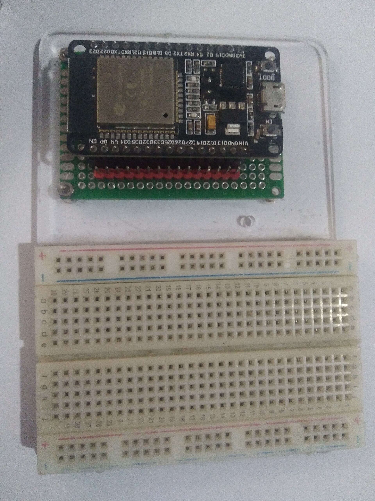
En software, un error de la IA
En hardware, un error de la IA
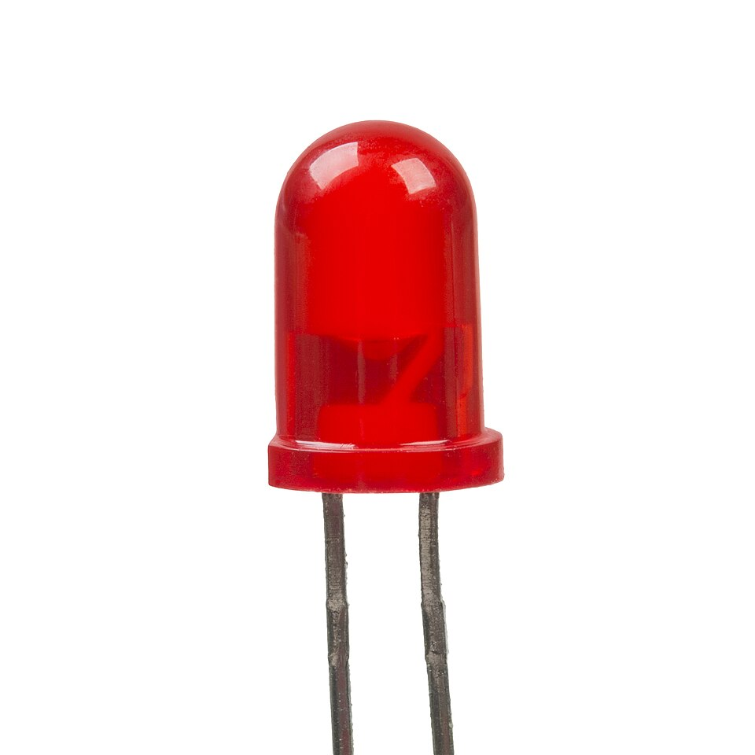
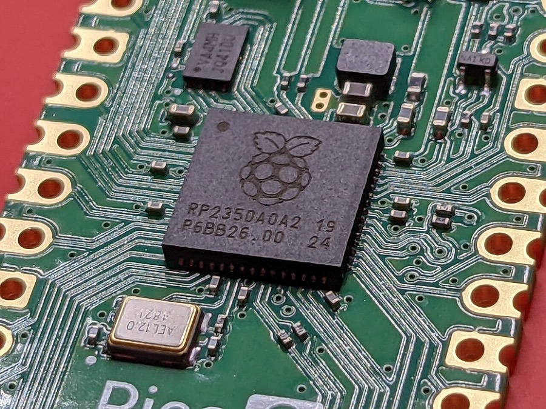
Se llama datasheet.
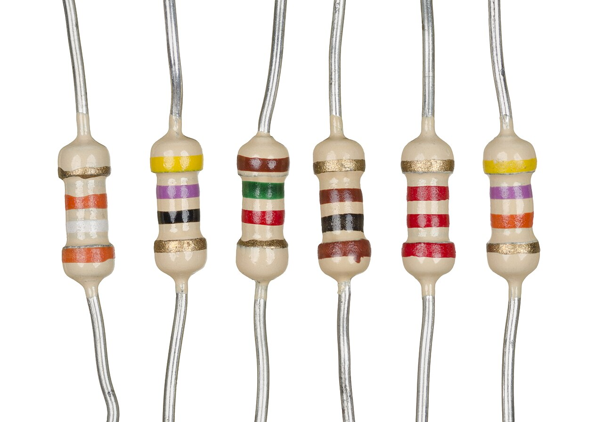
› Antes de cablear:
¿Qué falta?
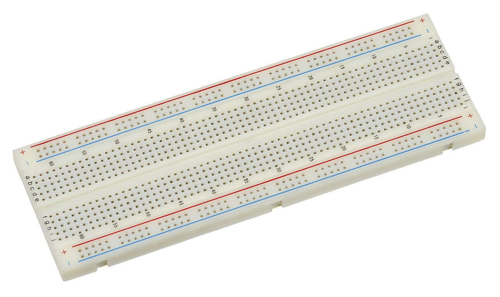
“VCC → 5V.
Debería aguantar.”
damage may be permanent
EJEMPLO ILUSTRATIVO · CAMBIAR POR UN CASO REAL
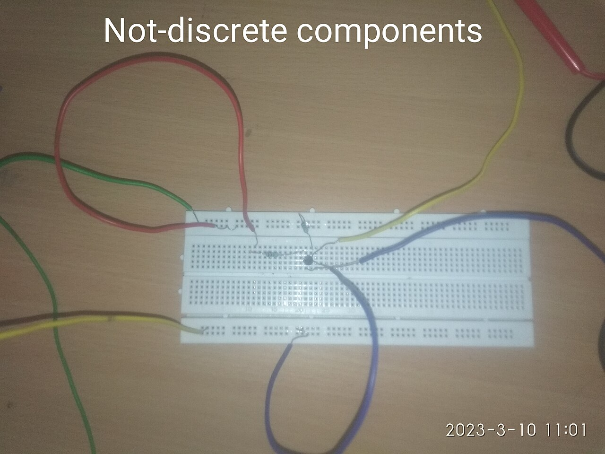
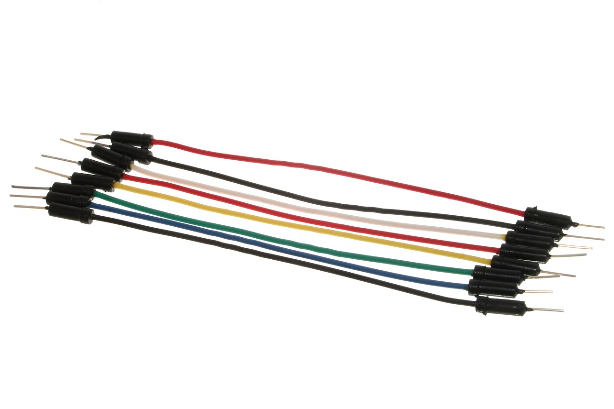
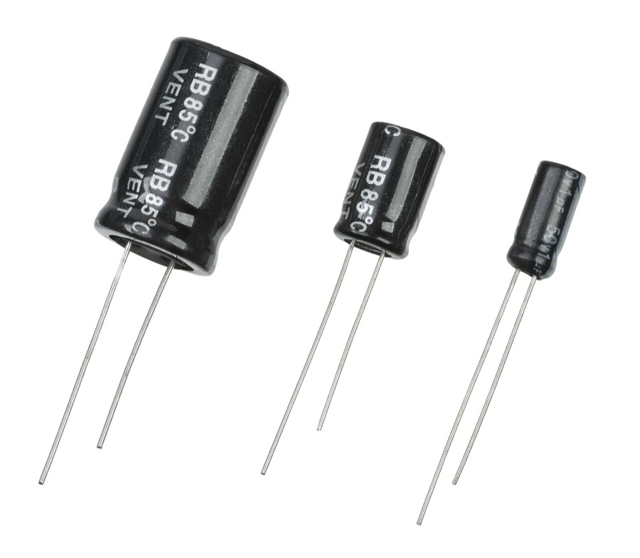
H1 sin alimentación
H2 cableado incorrecto
H3 fallo de comunicación
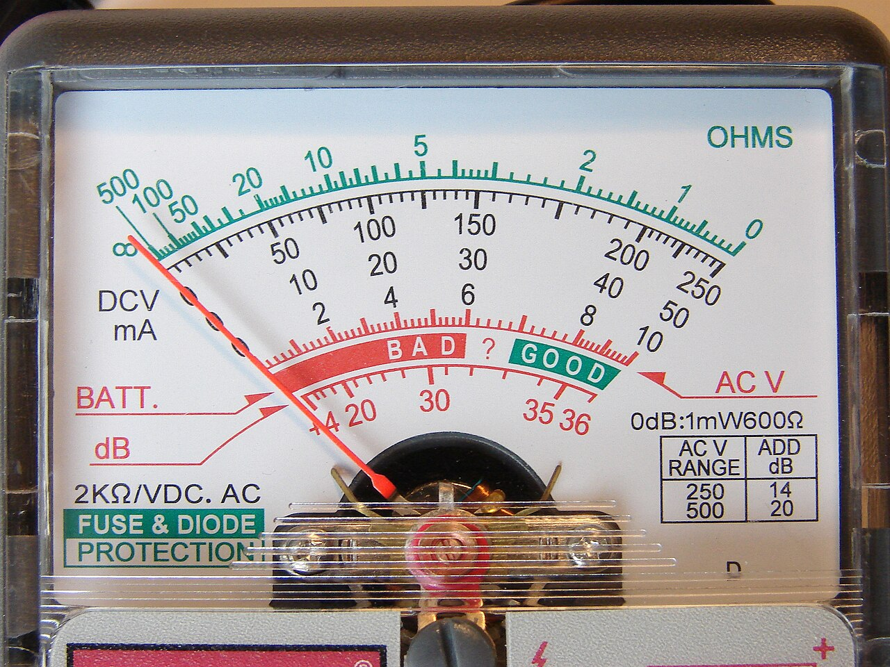
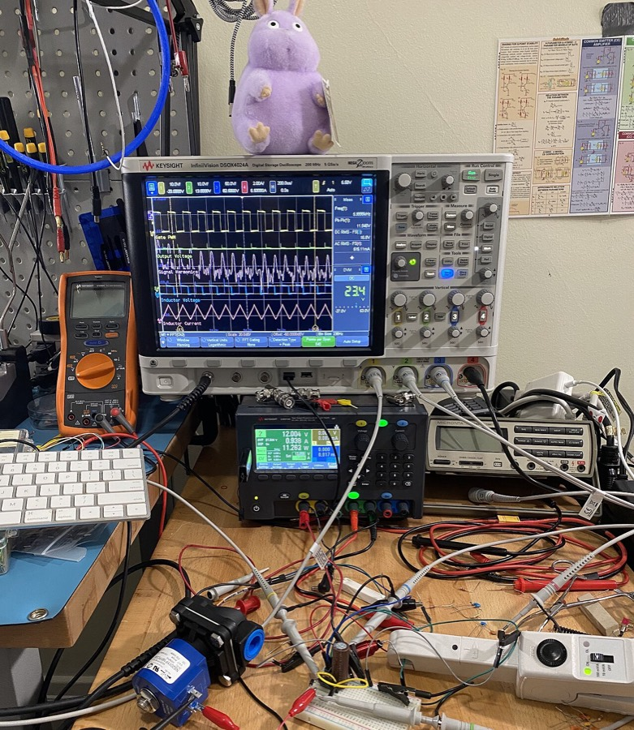
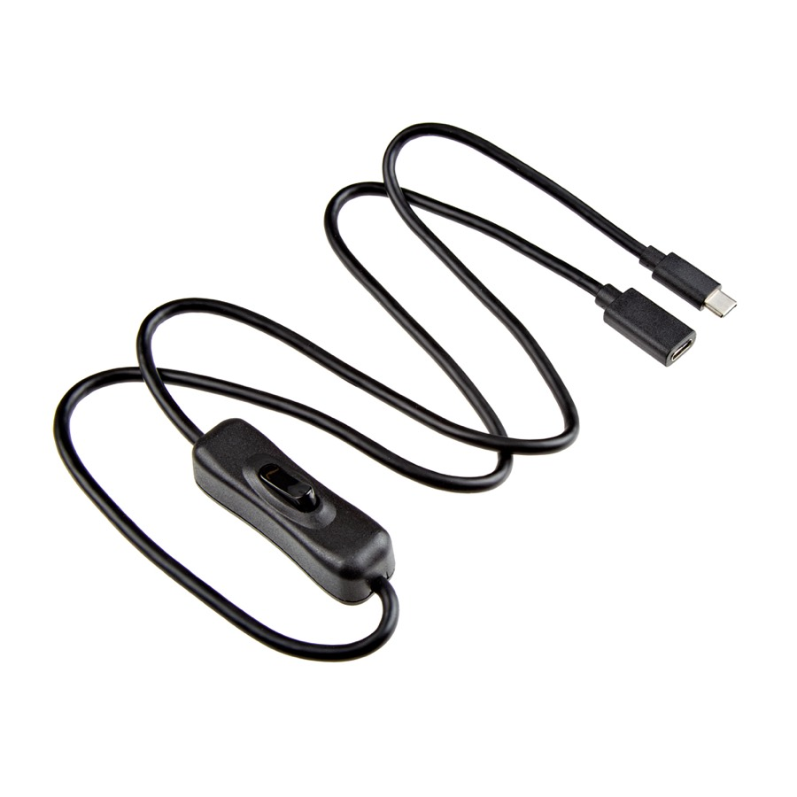
OBSERVACIÓN
Display apagado
MEDICIÓN
0.0 V
H1 power
H2 wiring
H3 comms
Prioritize H1.
Check USB → regulator.
Specs reales.
Riesgos visibles.
Medir → actualizar.
¿Construyes hardware con IA? Únete.
crafters.chat → github.com/crafter-station/vibe-hardware-f13-slides